Grafana Guide: Create a Dashboard and the First Panel
|
This content was generated with the assistance of AI and should be verified against the official documentation before being relied on in production. |
Checked on 2026-11-11 against Grafana 13.3.x.
What you build
You create a new dashboard called Bookshelf (guides) in the folder Guides and put one panel on it, a time series that draws how many requests per second the Bookshelf service answers, one line per HTTP status. The dashboard is the starting point of the later guides in this series, which add panels, variables, rows and alerts to it.
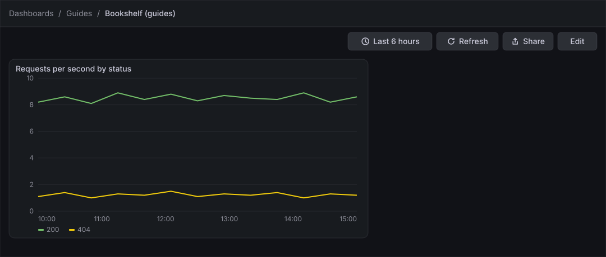
Before you start
-
Start the Grafana profile of the hands-on lab and wait about a minute:
cd lab docker compose --profile grafana up -d -
Open http://localhost:3000, sign in as
adminwith the passwordadmin, and click Skip when Grafana 13.3 asks you to update the default password. -
Do the previous guide, Explore logs and traces, or at least the first-steps guide, which creates the folder Guides used in the Save the dashboard steps. If the folder does not exist, create it with Dashboards → New → New folder.
-
The data source Prometheus is provisioned by the lab and is the default data source, so there is nothing to add. The load generator sends traffic to the Bookshelf service in its default mode, which gives the query something to draw.
-
The guide was checked on Grafana Enterprise 13.3.0 (the free image, no licence key). Creating dashboards needs the Editor or Admin role of the organization;
adminhas it. -
The figures are drawings of the Grafana 13.3 user interface, not screenshots, so small details can differ from your screen. A highlighted box with a number marks the control of the step with the same number.
Steps
Two screens are used. The first map shows a dashboard in edit mode; the second shows the panel editor. Come back to them when a control is not where the figure shows it.
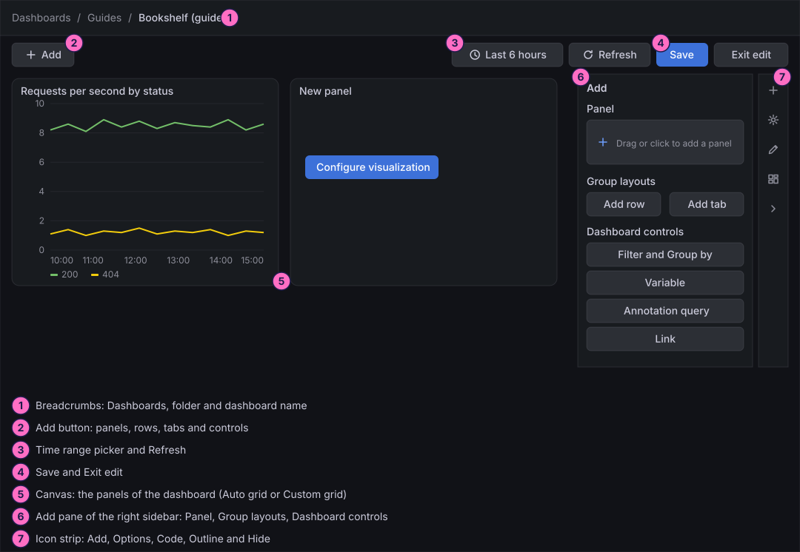
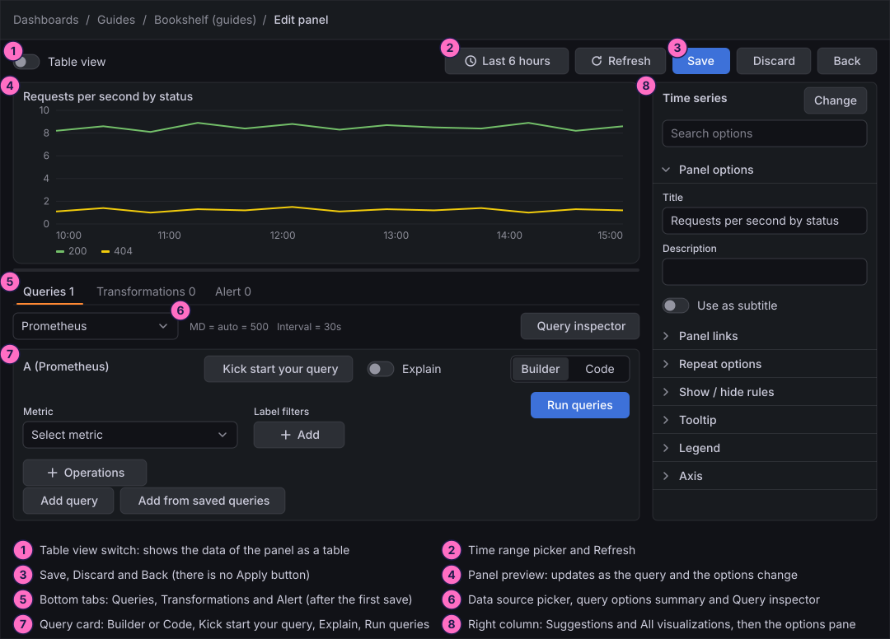
Open a new dashboard
-
In the left navigation, click Dashboards.
-
Click New at the top right, then New dashboard. The + button of the top bar offers the same entry.
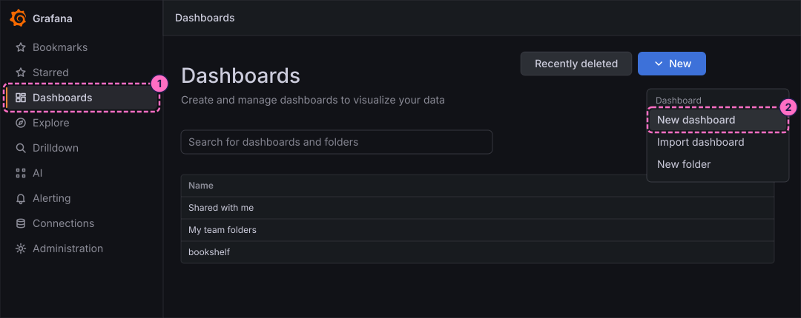
Add the first panel
-
Look at the empty dashboard. Grafana 13.3 opens a new dashboard directly in edit mode and asks for a layout. Leave Auto grid selected, which is the default.
-
In the Add pane of the right sidebar, click the Panel tile ("Drag or click to add a panel"). Earlier releases showed an Add visualization button in the middle of the page instead.
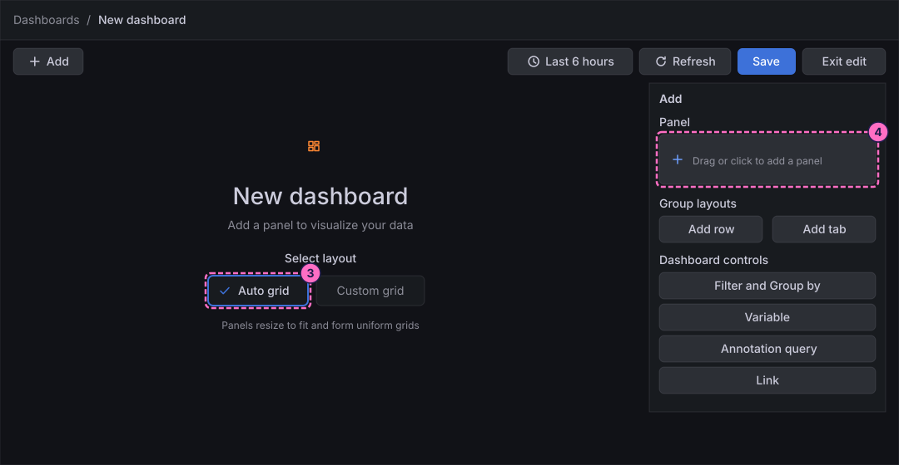
-
In the Panel pane that replaces the Add pane, click Edit visualization.
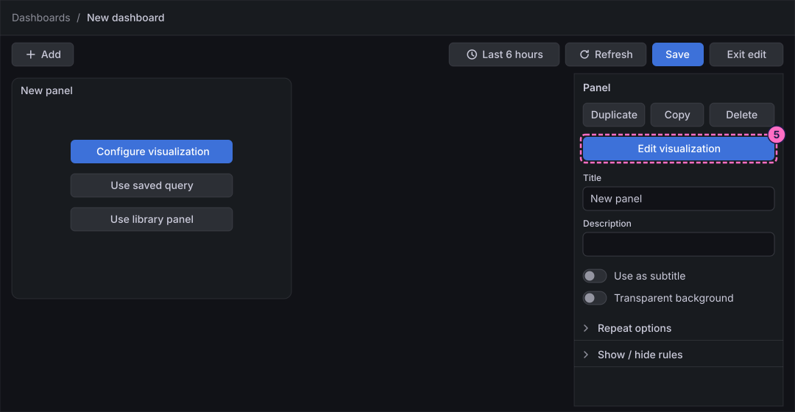
Write the query
-
At the bottom of the panel editor, check that the Queries tab is selected and that Data source shows Prometheus. If it shows another data source, open the picker and choose Prometheus.
-
In query A, click Code in the Builder / Code switch.
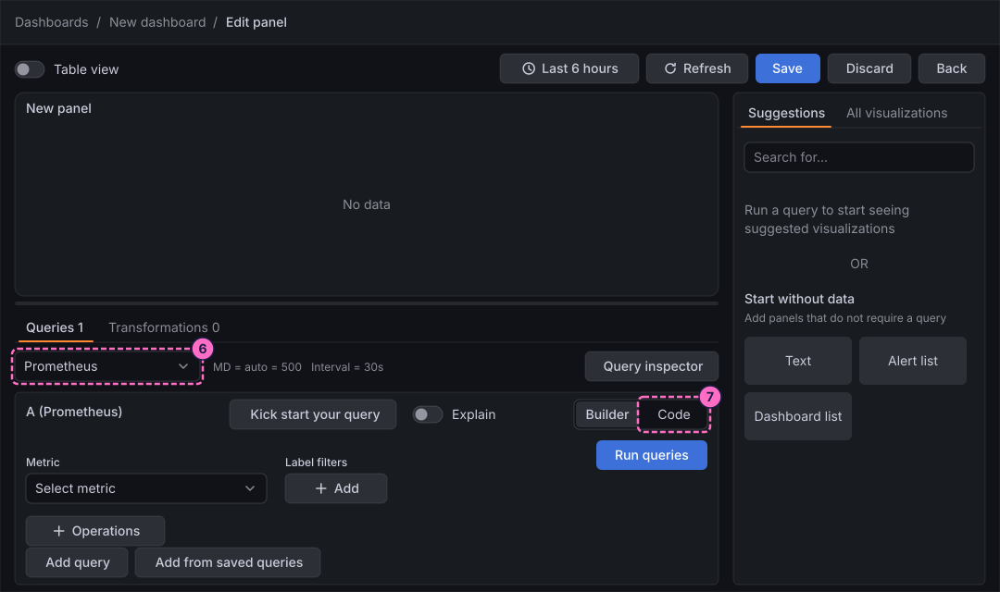
-
Click inside the query editor first, so that it has the focus, then type the query:
sum by (status) (rate(http_server_requests_seconds_count{application="bookshelf"}[1m])) -
Click Run queries.
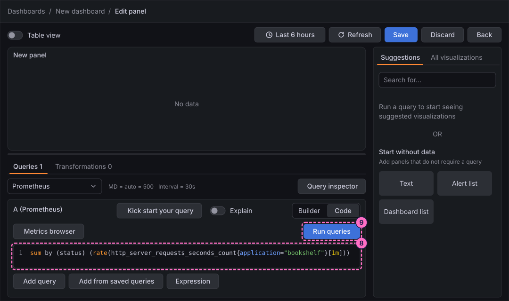
Choose the visualization and name the panel
-
The preview now draws two lines, one for the status
200and one for404, and the right column lists suggested visualizations. Under Suggestions, click Time series.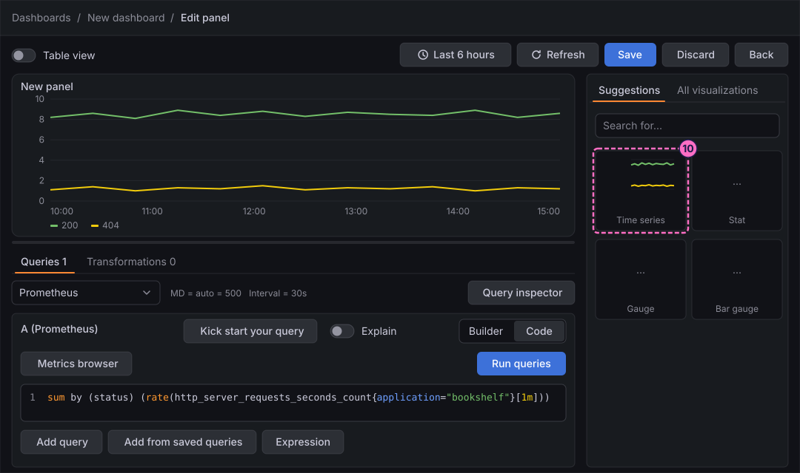
-
The right column becomes the options pane of the visualization, headed Time series. Under Panel options, type
Requests per second by statusin Title. The title of the preview changes as you type. -
In Description, type
Request rate by status. -
Click Save in the header of the editor. The 13.3 panel editor has no Apply button; Save saves the whole dashboard and Back returns to it.
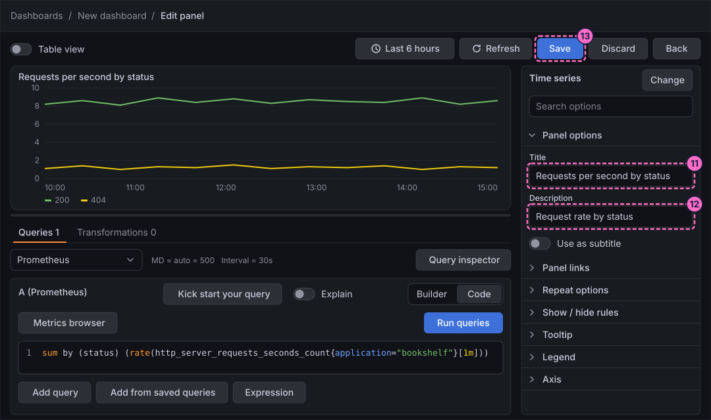
Save the dashboard
-
In the Save dashboard drawer, replace the default Title
New dashboardwithBookshelf (guides). -
In Folder, open the picker and choose Guides.
-
Click Save.
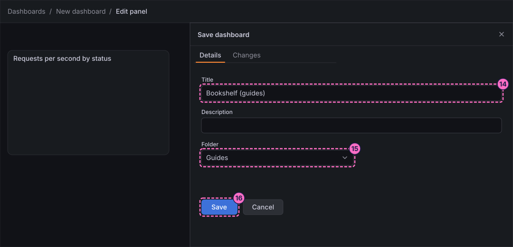
-
A green toast reads Dashboard saved and the address bar changes to
/d/<uid>/bookshelf-guides. You stay in the panel editor, which now also has an Alert tab. Click Back.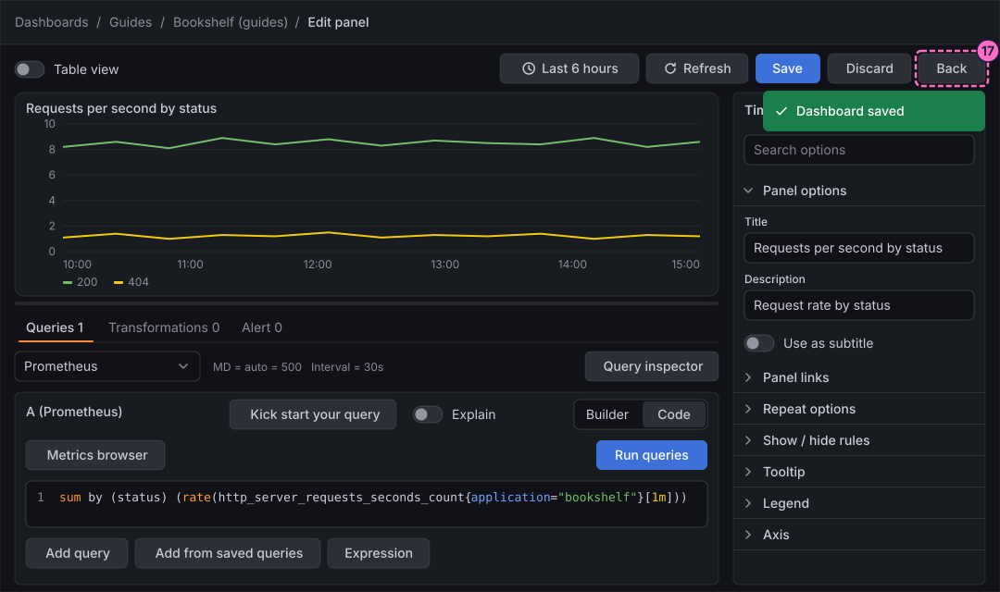
Leave edit mode
-
The dashboard is still in edit mode and shows the panel. Click Exit edit.
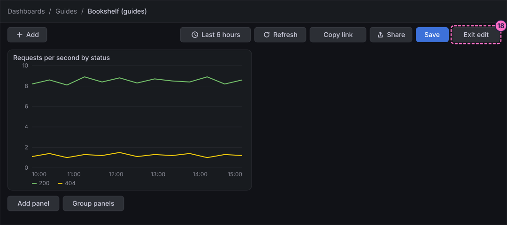
-
If Grafana 13.3.0 shows the dialog Unsaved changes ("Do you want to save your changes?"), which it did even right after a save, click Save.
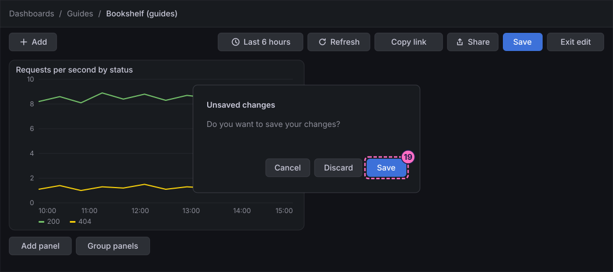
-
In the Save dashboard drawer that opens, click Save again. Edit mode closes and the dashboard is shown as in the figure at the top of this guide.
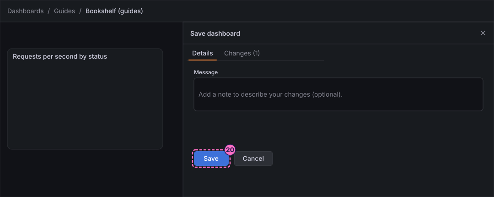
Check the result
Open Dashboards → Guides → Bookshelf (guides). The dashboard must show one panel, Requests per second by status, with a green line for 200 and a yellow line for 404 over the last 6 hours, and the toolbar must offer Edit.
To see the query react, force errors and reload the panel with Refresh:
curl -X POST localhost:8090/mode/failingWithin about a minute a third line appears for the status 500. Restore normal traffic afterwards:
curl -X POST localhost:8090/mode/normalVariations
-
Build the same panel without typing PromQL: in the query editor stay on Builder, choose the metric
http_server_requests_seconds_count, add the label filterapplication=bookshelf, then add the operations Rate with Range1mand Sum by with Labelstatus. -
Start from Explore instead of a dashboard: run the same query there and use Add → Add to dashboard, as the guide on exploring metrics shows.
What can go wrong
| Symptom | Cause | Fix |
|---|---|---|
The preview says No data and the editor shows a red error row |
The text was typed before the editor had the focus, so the query is mangled (Prometheus reports a parse error). |
Click in the editor, select all with Ctrl+A (Cmd+A on macOS), and type the query again. |
Only the line for |
The lab started less than a minute ago, so Prometheus has few samples, or the load generator is stopped. |
Wait a minute and press Refresh. Check the mode with |
The folder picker does not list Guides |
The first-steps guide was skipped. |
Cancel the drawer, create the folder with Dashboards → New → New folder, and save again. |
Exit edit keeps showing Unsaved changes |
Grafana 13.3.0 raises the dialog even after a save. |
Click Save, and Save again in the drawer; the dialog does not return once edit mode has closed. |
Clean up
Keep the dashboard: the following guides in this series extend it. To remove it with everything else the lab stores, stop the
profile with docker compose --profile grafana down -v, which also deletes the volumes and therefore the dashboard.
Where to go next
-
Previous guide: Explore logs and traces.
-
Next guide: Time series panels, which adds a second query, a legend, units and thresholds to this panel.
-
Reference: Building Dashboards explains edit mode, layouts, rows, tabs and settings in full.